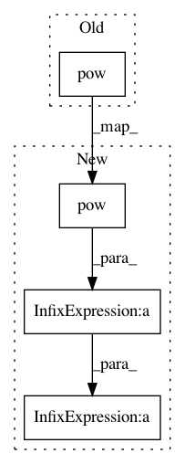

4e97213b48e152344b7429c7d1067e7525bfa4b9,examples/source_separation/utils/metrics.py,,sdr,#,7
Before Change
reference = scale * reference
error = estimate - reference
reference_pow = reference.pow(2).mean(axis=2)
error_pow = error.pow(2).mean(axis=2)
return 10 * torch.log10(reference_pow) - 10 * torch.log10(error_pow)
After Change
reference = scale * reference
error = estimate - reference
reference_pow = reference.pow(2)
error_pow = error.pow(2)
if mask is None:
reference_pow = reference_pow.mean(axis=2)
error_pow = error_pow.mean(axis=2)
else:
denom = mask.sum(axis=2)
reference_pow = (mask * reference_pow).sum(axis=2) / denom
error_pow = (mask * error_pow).sum(axis=2) / denom
return 10 * torch.log10(reference_pow) - 10 * torch.log10(error_pow)
In pattern: SUPERPATTERN
Frequency: 3
Non-data size: 4
Instances
Project Name: pytorch/audio
Commit Name: 4e97213b48e152344b7429c7d1067e7525bfa4b9
Time: 2020-10-13
Author: 855818+mthrok@users.noreply.github.com
File Name: examples/source_separation/utils/metrics.py
Class Name:
Method Name: sdr
Project Name: pytorch/examples
Commit Name: 9fe431ed5be2ebe43d08d5506a8f8eb690399a80
Time: 2017-10-01
Author: design@kaixhin.com
File Name: vae/main.py
Class Name:
Method Name: loss_function
Project Name: junyanz/BicycleGAN
Commit Name: 4eb1bb9457d53f557fee68a639ae48d5fb539ce3
Time: 2018-10-25
Author: junyanz@users.noreply.github.com
File Name: models/bicycle_gan_model.py
Class Name: BiCycleGANModel
Method Name: backward_EG